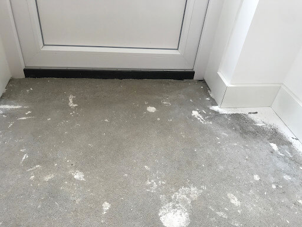
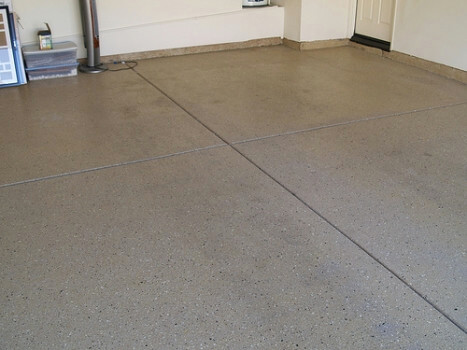

Zelf een gietvloer leggen op verschillende ondergronden - het complete overzicht.
 13 mei 2020
13 mei 2020
 Karel
Karel

Inhoud
Wanneer je zelf je gietvloer gaat leggen heb je altijd te maken met de ondergrond waarop je de gietvloer legt. Verschillende ondergronden vragen om een verschillende voorbewerking. In dit artikel lopen een aantal van de meest voorkomende ondergronden bij langs en leggen we uit hoe je de ondergrond het beste kunt voorbewerken. Ben je van plan om zelf je gietvloer te leggen en heb je vragen? Bij Gietvloermakers kun je gebruik maken van een gratis adviesgesprek .
Het voorbewerken van de ondergrond dient twee verschillende doelen:
- De ondergrond voldoende vlak en glad maken. Hiermee voorkom je dat de ondergrond doortekent in de nieuwe gietvloer.
- De ondergrond opruwen zodat de gietvloer voldoende kan hechten aan de ondergrond.
Per ondergrond verschilt de bewerking die nodig is om bovenstaande twee doelen te realiseren.
Zand- en cementdekvloer

Om een zand- en cementvloer voor te bereiden moeten alle pukkels (oneffenheden), aangehechte verf resten,
vloerbedekking resten, kalk, etc. verwijderd worden.
Dit doe je door de ondergrond te schuren met een vlakschuurmachine en schuurpapier nr. 40.
Bij grotere vloeren raden we je aan om een professionele vlakschuurmachine te huren.
Door de vloer te schuren is hij in een keer glad gemaakt en opgeruwd.
Anhydrietvloer (calciumsulfaat gebonden)
Bij een anhydrietvloer moet je bij de gehele vloer de slikhuid wegschuren. Hiermee haal je alle oneffenheden direct weg. Het glad maken en opruwen doe je dus in een keer.
Plavuizen (keramische vloertegels)
Bij een plavuizen ondergrond is het heel belangrijk dat de plavuizen recht in de vloer liggen en niet scheef.
De voorbewerking verschilt namelijk wanneer de plavuizen recht of scheef liggen.
Je controleert in hoeverre de plavuizen recht liggen door met een rij (een lat waarvan je weet dat hij recht is) de vloer af te gaan.
Wanneer er ergens onder de rij meer dan 3 mm sparing is, bestaat er een goede kans dat de plavuizen zich gaan aftekenen in de gietvloer.
Heb je vragen over jouw plavuizen ondergrond?
Maak dan gebruik van ons gratis adviesgesprek om jouw situatie met een van onze experts te bespreken.
Wanneer je zeker weet dat de plavuizen recht in de ondergrond liggen kun je de ondergrond bewerken.
Glad maken: het bewerken van een plavuizen ondergrond doe je met een diamant slijpmachine.
Opruwen: Het opruwen gebeurt terwijl je de vloer met de diamant slijpmachine aan het gladmaken bent.
Vloeren uit natuurlijke materialen
Ondergronden uit harde natuurlijke materialen, zoals marmer, lijsteen, klei, etc. zijn ongeschikt om als ondergrond te dienen voor een gietvloer. Deze dienen eerst verwijderd te worden.
Houten vloer
Voor een houten vloer geldt dat je er rechtstreeks een gietvloer op kunt maken.
Je neemt dan wel het risico dat de overgang tussen de houten delen zich gaan aftekenen in de gietvloer.
Dat kan direct na het aanbrengen of later ten gevolgen van rek en krimp.
Wil je dat risico nemen, dan moet je de vloer schuren en alle aansluitingen en overgangen afdichten met overschilderbare kit.
Ook moet je alle oneffenheden wegsteken of schuren.
Vervolgens moeten er twee speciale primerlagen worden aangebracht.
Als jij advies wilt over het aanbrengen van een gietvloer op jouw houten ondergrond kun je gebruik maken van ons gratis adviesgesprek met een van onze experts.
Als je alle risico’s wilt vermijden kun je de vloer het beste overlagen met fermacell platen voordat je de gietvloer gaat aanbrengen.
Grindvloer
Een grindvloer moet eerst dichtgezet worden met egaline. Wanneer de egaline is uitgehard moet deze ondergrond worden geschuurd met schuurpapier korrel 40. Vervolgens kan de gietvloer worden aangebracht. Als je vragen hebt over het aanbrengen van de egaline kun je gebruik maken van ons gratis adviesgesprek met een van onze experts.
Betonvloer
Een vette, gevlinderde betonvloer moet je eerst stralen. Heb je een schone betonvloer? Dan kun je volstaan met diamant schuren. Heb je een ruw gestorte betonvloer? Dan moet de ondergrond eerst worden geëgaliseerd met egaline. Als je vragen hebt over het aanbrengen van de egaline op je ruwe betonvloer kun je gebruik maken van ons gratis adviesgesprek met een van onze experts.
Fermacellvloer
Zelf een gietvloer leggen op een fermacellvloer gaat op dezelfde manier als op een gewone dekvloer. Het verschil is dat het wel nodig is om voor het aanbrengen van de eerste laag ervoor te zorgen dat de gietvloer niet tussen de platen door kan weglopen. Let ook op de kieren tussen de platen bij de wand. Je kunt de kieren dicht maken door overschilderbare kit in de voegen en kieren te smeren. Strijk de kit direct na het aanbrengen vlak af.
Prijs berekenen
Wat kost het om zelf een gietvloer in je huis te leggen? Dat hangt er vanaf hoe groot de oppervlakte is. Met onderstaande tool kun je envoudig berekenen wat het kost om zelf een gietvloer in jouw huis te leggen: